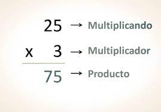
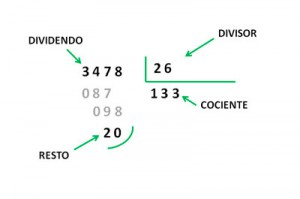

Suma
Suma es la operación matemática de composición que consiste en combinar o añadir dos números o más para obtener una cantidad final o total.

Resta
La resta consiste en quitar una cantidad a otra, sustraer un determinado número de elementos a un conjunto.

Multiplicación
Multiplicar consiste en añadir o sumar un número varias veces.

División
La división se utiliza para calcular cuántas veces se divide un número entre otro para obtener un resultado y un resto.
